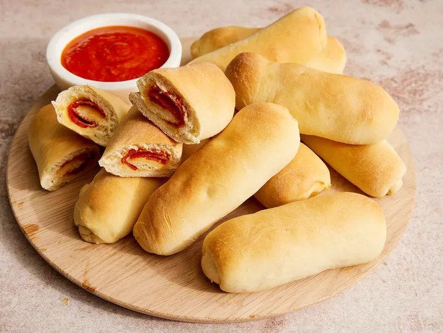

Pepperoni Rolls

Description
A delicious delicacy that originated in West Virginia, USA, is pepperoni rolls.
Savory pepperoni slices are encased in soft, yeasty bread to form these buns.
The result is a tasty treat that is easy to carry around and ideal for a fast snack.
It's a straightforward yet delicious snack that has a devoted following, particularly
in the Appalachian region.
Ingredients
- 1 cup warm water (100 degrees F/40 degrees C)
- ½ teaspoon white sugar
- 1 (.25 ounce) package active dry yeast
- 5 cups all-purpose flour
- ¾ cup white sugar
- 2 teaspoons salt
- 2 eggs, beaten
- ½ cup butter, melted
- 1 (8 ounce) package sliced pepperoni
Steps
- Stir together 1 cup warm water and 1/2 teaspoon sugar in a small bowl until sugar dissolves.
Sprinkle yeast over water; let stand for 5 minutes.
- Mix flour, 3/4 cup sugar, and salt in a large bowl. Stir in yeast mixture, beaten eggs, and
melted butter until dough comes together. Turn dough out onto a lightly floured surface and
knead until smooth and elastic, about 8 minutes.
- Place dough into a greased bowl and turn to coat with oil. Cover with a light cloth; let rise in
a warm place until doubled in volume, about 1 1/2 hours.
- Preheat the oven to 350 degrees F (175 degrees C). Grease a cookie sheet.
- Punch down dough; divide into 20 equal pieces about the size of a golf ball. Using your hands,
flatten each piece into a small rectangle, about 4 inches square.
- Place 3 overlapping slices of pepperoni down the center of each dough square. Place another row
of 3 pepperoni slices next to the first. Roll dough around pepperoni, pinch the edges closed,
and place rolls on the prepared cookie sheet.
- Bake rolls in the preheated oven until bottoms are lightly browned and tops are barely golden,
14 to 16 minutes.